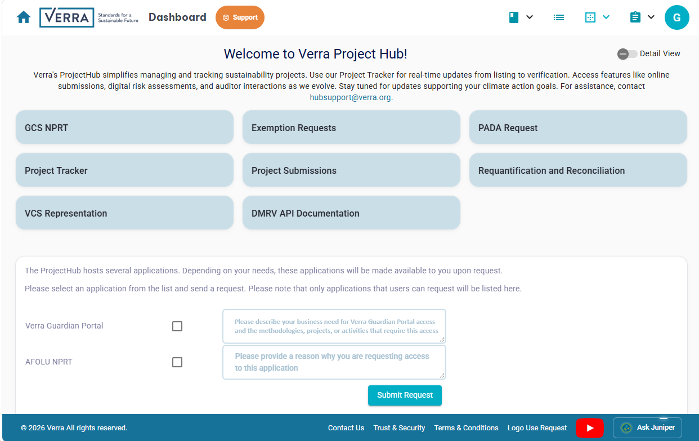
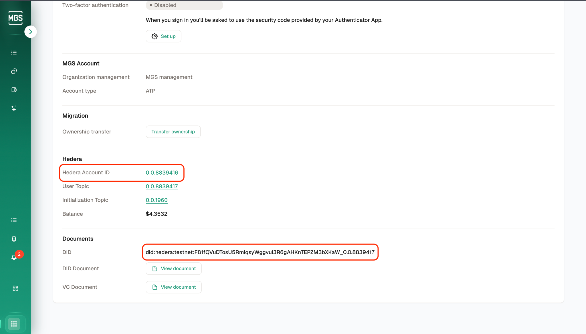
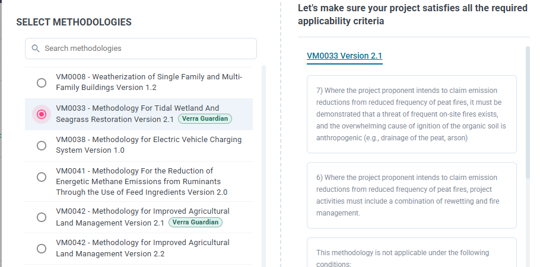
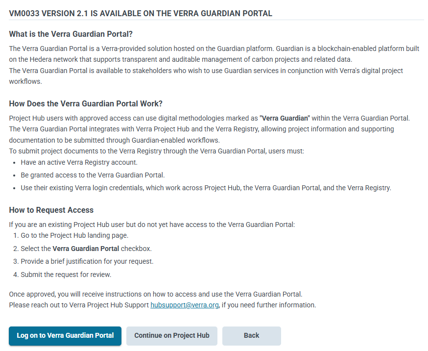
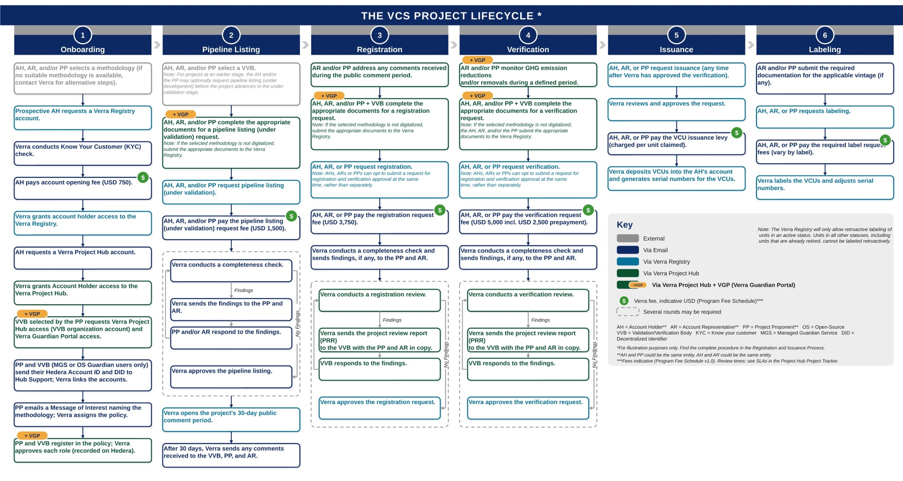

VERRA DIGITAL PROJECT SUBMISSION
Application & Onboarding Process Guide
For Project Proponents and Validation/Verification Bodies (VVBs)
- 01Overview, Glossary & Prerequisites
- 02Choosing Your Guardian Access Pathway
- 03Pathway 1 — Verra Project Hub
- 04Pathway 2 — Verra Guardian Portal
- 05VVB Onboarding
- 06Policy Assignment & Project Workflow
- 07Timelines & Fees
- 08Summary Checklists & Contacts
- 09The VCS Project Lifecycle
01 Overview
Who this guide is for, key terms, and what you need before you start.
Verra clients can access Guardian through two pathways (Section 02). Whichever pathway you choose, an active Verra Registry account is required before project data can be submitted to the Verra Project Hub.
A digital submission involves two parties working in the same system: the project proponent (PP), who prepares the project documents, and the validation/verification body (VVB), who completes its validation and verification documents and responds to Verra’s findings. Both must be onboarded before a registration or verification request can move forward.
ROLES AT A GLANCE
Role | What they do in Guardian / Project Hub | Read sections |
|---|---|---|
Project proponent (incl. Account Holder - AH/Account Representative - AR) | Registers in the policy, prepares the Project Description and monitoring reports, submits to Project Hub, pays all applicable Verra fees, and, onboard the VVB. | 01–04, 06–08 |
Validation/verification body (VVB) | Registers in the policy with the VVB role, reviews the PP created project documents including the audit findings on other aspect of the project to ensure adherence with all applicable VCS rules and requirements, completes validation/verification documents, and responds to Verra’s Project Review Report (PRR) findings. | 01–06, 08 |
Verra Project Hub Support | Grants access, links Hedera accounts, assigns policies, and approves PP and VVB roles in the policy. | — |
Hashgraph | Technical support for the Managed Guardian Service (MGS) platform used in Pathway 2. Providing necessary user login credentials to access Guardian services. | — |
GLOSSARY
Term | Meaning |
|---|---|
Hedera | The underlying public distributed ledger (network) that records and secures data. |
Guardian | The open-source MRV and tokenization platform, built on Hedera, that runs the digital methodologies. |
Verra Guardian Portal (VGP) | Verra’s Managed Guardian Service – a hosted offering that lets organizations run Guardian without managing the underlying infrastructure. |
Managed Guardian Service (MGS) | The hosted, cloud-based Guardian service. Pathway 2 users hold an MGS account and link it to Verra. |
Hedera Account ID | Your account identifier on the Hedera network (format 0.0.xxxxxxx), shown on your MGS profile. |
DID | Decentralized Identifier — the digital identity Guardian creates for each user, shown alongside the Hedera Account ID. |
Policy | A methodology digitalized in Guardian (e.g., VM0050). |
PRR | Project Review Report — Verra’s findings on a project review request for example registration, verification, crediting period renewal or re-quantification requests, to be responded by the VVB, if required in consultation with the project proponent. |
PREREQUISITES
Project proponents | VVBs |
|---|---|
|
|
02 Choosing Your Guardian Access Pathway
PPs and VVBs both use one of these two pathways. The steps are the same for both roles.
Pathway | Best for | What you set up | Point of contact |
|---|---|---|---|
1 — Verra Project Hub | Existing Project Hub users. Most direct; no external account needed. | Select the Verra Guardian Portal checkbox on the Project Hub landing page and submit a request; sign in to the Verra Guardian Portal with your Project Hub credentials. | Verra Project Hub Support |
2 — Verra Guardian Portal (MGS) | New or existing MGS account holders. | Create or use an MGS account; send your Hedera Account ID and DID to Verra for linking. | Verra Project Hub Support (linking); Hashgraph (MGS platform for Hedera account id and DID) |
03 Pathway 1: Verra Project Hub
For existing Verra Project Hub users (PPs and VVBs) — the most direct pathway, no external account setup required. Point of contact: Verra Project Hub Support.
1
Log In
Access your Verra Project Hub account
2
Navigate
Scroll to the application request panel on the landing page
3
Check the Box
Select the Verra Guardian Portal checkbox
4
Explain
Describe your business need and the methodologies, projects or activities that require access
5
Get Access
Select Submit Request; Verra reviews and grants access
Once approved, sign in to the Verra Guardian Portal with your Project Hub credentials.

Verra Project Hub landing page — request Verra Guardian Portal access
04 Pathway 2: Verra Guardian Portal
For new or existing Managed Guardian Service (MGS) account holders. Point of contact: Verra Project Hub Support (account linking); Hashgraph for MGS platform issues.
1
Portal Account
Create a new MGS account or log in to your existing one
2
Get Hedera ID & DID
Copy both from your MGS profile
3
Contact Verra
Email them to hubsupport@verra.org
4
Linked
Verra verifies and links the account
Provide both values exactly as shown — an incorrect Hedera Account ID or DID will stop the link.

MGS profile — Hedera Account ID & DID
05 VVB Onboarding
VVBs complete their documents inside Guardian, so they need their own access, Hedera identity (DID) and an approved role in the policy.
1
Selected
PP selects the VVB and shares the project and methodology or policy
2
Project Hub
VVB confirms Project Hub access for its organization
3
Guardian Access
VVB gets access via Pathway 1 or 2
4
Register
VVB registers in the assigned policy with the VVB role
5
Approved
Verra approves the role; the PP can now select the VVB
When PPs register in a policy, they choose their VVB from a list, so the VVB must already be active in Guardian.
WHO SETS UP WHAT
Task | Responsible | Supported by |
|---|---|---|
Project Hub access for the VVB organization | VVB | Verra Project Hub Support |
Guardian access (Pathway 1) or Hedera Account ID + DID linking (Pathway 2) | VVB | Verra Project Hub Support; Hashgraph for MGS platform issues |
Registration in the policy with the VVB role | VVB | — |
Approval of the VVB role in the policy | Verra Project Hub Support | — |
Confirming the VVB is active before submitting a request | PP | VVB |
WHAT THE VVB DOES DURING THE LIFECYCLE
- Registration and verification: complete the VVB documents for the request (e.g., validation/verification report) alongside the PP’s documents.
- Deed of representation: create and submit the VVB’s deed of representation in Project Hub.
- Project Review Report (PRR): Verra’s review team raises the PRR to the VVB, with the PP and AR in copy. The VVB responds to the findings in Project Hub; the PP has view-only access.
06 Getting Started: Policy & Project Workflow
Once your account is linked, a policy is assigned and the project workflow begins.
STEP A — POLICY / DIGITAL METHODOLOGY ASSIGNMENT
1
Message of Interest
Send to Verra Project Hub Support
2
Name the Methodology
e.g., VM0050; name your VVB if already selected
3
Policy Assigned
Verra assigns it within Guardian
Policy availability depends on Verra’s current digital methodologies; ask Hub Support which are available. You can request a policy in either of two ways: by sending a Message of Interest (above), or directly in Project Hub (below).
Requesting a policy in Project Hub
Create a new project description and select a methodology. Methodologies available in the Verra Guardian Portal carry a Verra Guardian tag. Selecting one opens a page that explains the portal and lets you log on to the Verra Guardian Portal or continue on Project Hub. If you don’t have portal access yet, request it as described in Pathway 1.

Select a methodology tagged Verra Guardian

Methodology page — log on to the Verra Guardian Portal or continue on Project Hub
STEP B — PROJECT WORKFLOW
1
User Registration
PP and VVB each register in the policy; recorded on Hedera
2
Project Description
Prepared within Guardian
Representation deeds
Prepared, signed and submitted on the hub
3
One-Click Submission
Sent directly to Verra Project Hub
STEP C — VALIDATION & VERRA REVIEW
1
VVB Documents
VVB completes its documents for the request. Representation deeds prepared, signed and submitted on the hub.
VVB responds to the findings in the PRR in case findings are raised.
2
Request & Pay
PP submits requests and pays the fee.
PP responds to the request corrections if submitted documents are incomplete
3
Verra Review
Completeness check and review; PRR to the VVB if needed.
4
Approval
Verra approves the request
Monitoring and verification follow the same pattern for each monitoring period. See the full lifecycle in Section 09, and the review times and fees in Section 07.
07 Timelines & Fees
INDICATIVE VERRA FEES
Fee | When it is paid | Indicative amount (USD) |
|---|---|---|
Registry account opening | On account approval | 750 (one-time) |
Registry account maintenance | Annually, on the account approval anniversary | 750 per year |
Pipeline listing request | With the pipeline listing request | 1,500 per request |
Registration request review | With the registration request | 3,750 per project |
Verification request review | With the verification request | 5,000 (2,500 fee + 2,500 prepayment toward future issuance levies) |
VCU issuance levy | When requesting issuance | Per unit, based on the emission reductions and removals claimed in the monitoring report |
Label fees (e.g., CCB, SD VISta, Article 6) | When requesting labels | Varies by label |
Amounts are based on the Verra Program Fee Schedule v1.0 (October 2024) and may change. Always confirm against the current Verra Program Fee Schedule. VVB fees are also set out in the Fee Schedule.
08 Summary Checklists & Contacts
Use these to track progress.
Project proponent
☐ Confirm an active Verra Registry account (or register and pay the USD 750 opening fee).
☐ Confirm Verra Project Hub access.
☐ Choose your pathway: Project Hub (1) or Verra Guardian Portal/MGS (2).
☐ Pathway 1: select the Verra Guardian Portal checkbox on the Project Hub landing page, submit the request and wait for approval.
☐ Pathway 2: send your Hedera Account ID and DID to Hub Support and wait for linking.
☐ Select a VVB and confirm it has started VVB onboarding (Section 05).
☐ Request a policy: send a Message of Interest naming the methodology (e.g., VM0050), or select a methodology tagged Verra Guardian when creating a project description in Project Hub.
☐ Complete User Registration in the policy (recorded on Hedera) and select your VVB.
☐ Prepare and finalize your Project Description in Guardian.
☐ Submit via the one-click submission button and pay the applicable request fee (Section 07).
VVB
☐ Confirm Verra Project Hub access for your VVB organization.
☐ Get Guardian access via Pathway 1 or 2.
☐ Pathway 2 only: send your Hedera Account ID and DID to Hub Support.
☐ Register in the assigned policy with the VVB role.
☐ Wait for Verra to approve the VVB role, then confirm to the PP that you are active.
☐ Complete your validation/verification documents and deed of representation.
☐ Respond to PRR findings in Project Hub.
CONTACT INFORMATION
Verra Project Hub Support
All pathways and all onboarding stages
Access requests, Hedera account linking, policy assignment, PP and VVB role approvals
Hashgraph
MGS technical support (Pathway 2)
09 THE VCS PROJECT LIFECYCLE
